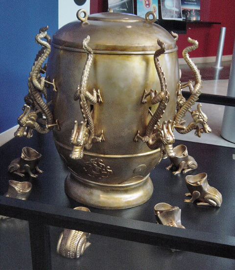
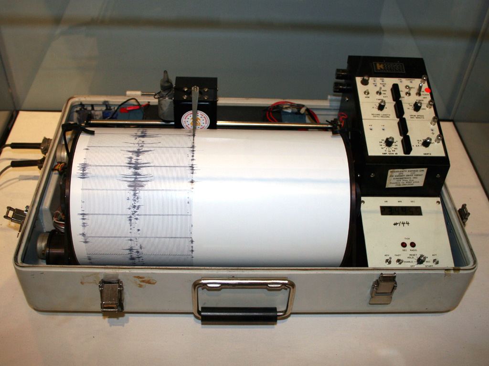
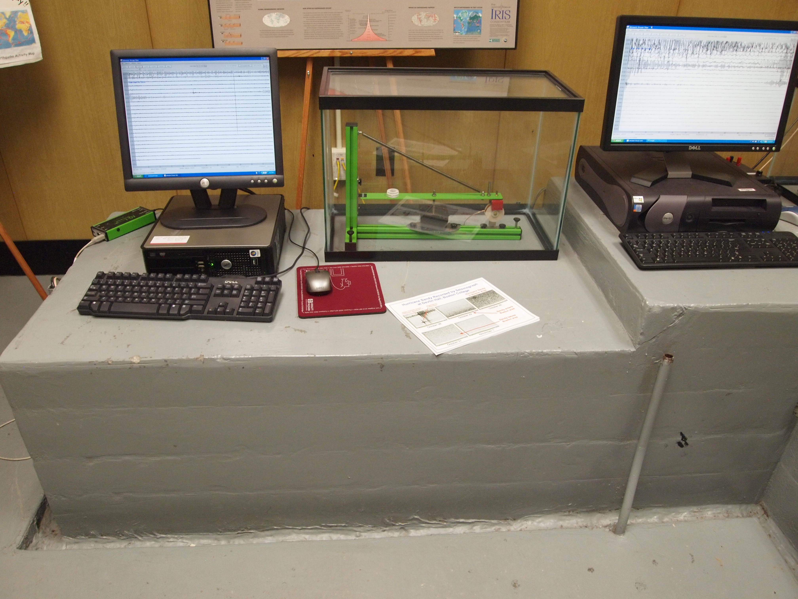
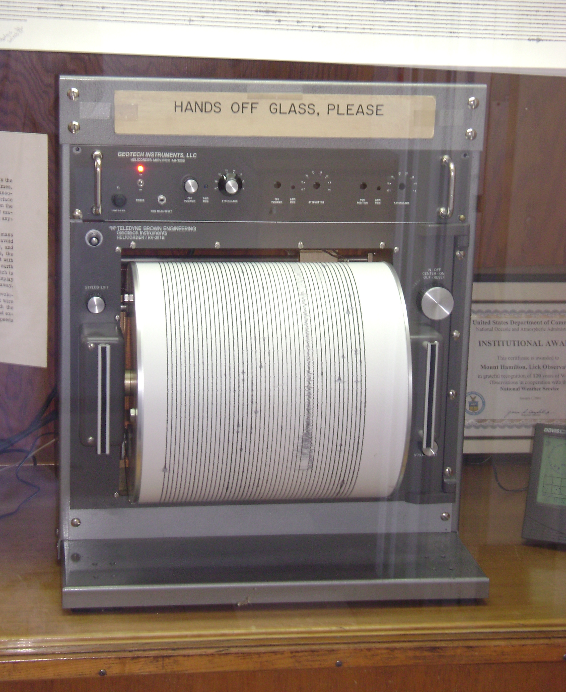

The first Chinese seismometer was invented in 132 A.D. by Zhang Hang during the Han Dynasty. Unlike a seismograph, it didn't measure motions in the ground over time via a graph, but instead showed where those ground motions came from. When there was an earthquake, a ball would drop from one of the eight dragon's mouths into the corresponding frog's mouth. This would indicate the direction of the earthquake.
A Picture of This Seismometer (from Wikipedia)
Modern seismometers can range from anything from a weight that is suspended on a string to a pen suspended on a heavy weight that records ground movements on to a rotating drum. Professional seismic observatories often measure on 3 different axes, which include North-to-South, East-to-West, and up-and-down (the vertical axis) and are occasionally mounted on bedrock. They are sometimes mounted other places, too, such as insulated enclosures on small buried piers. Regardless of how they are mounted, the location is very important, and is usually somewhere that avoids ground noise.
Kinematics Seismograph (From Wikipedia)
A Full on Seismic Observatory
A Seismometer at Lick Observatory